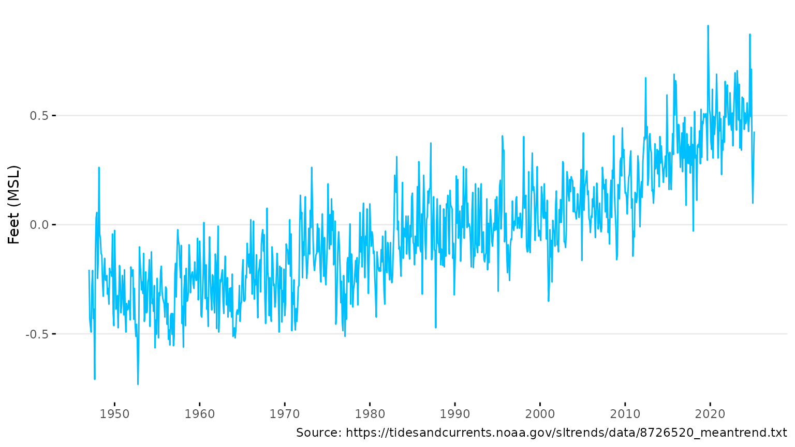
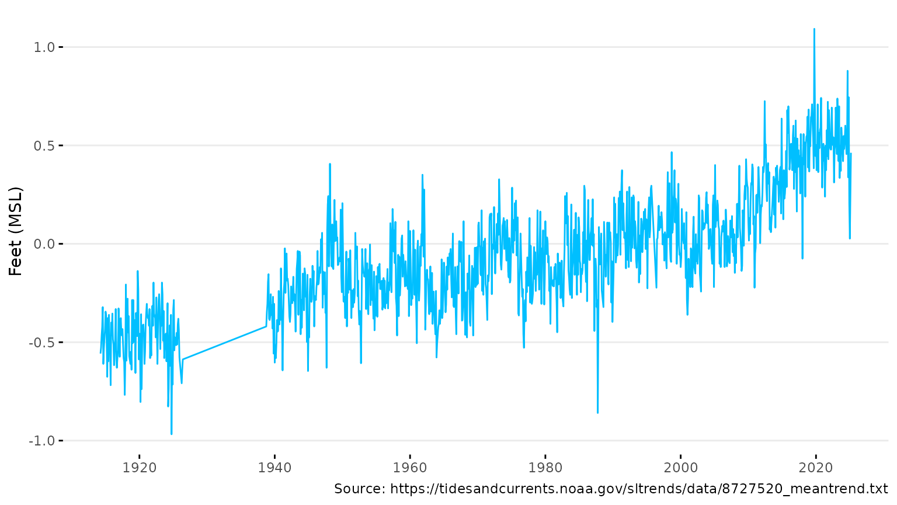
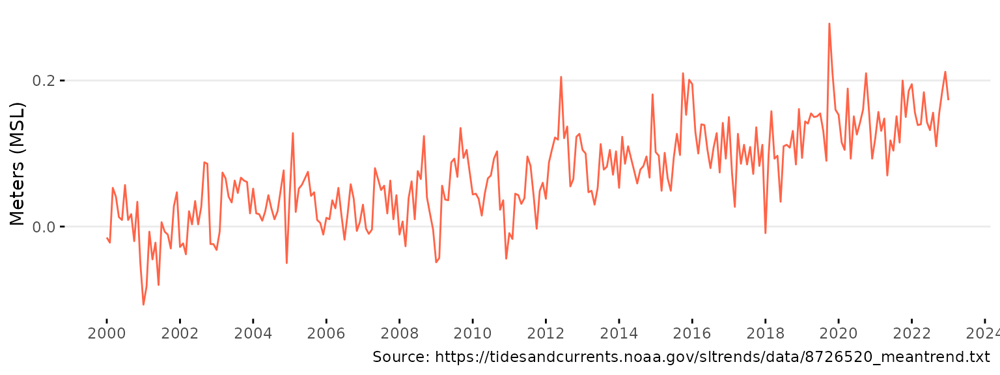
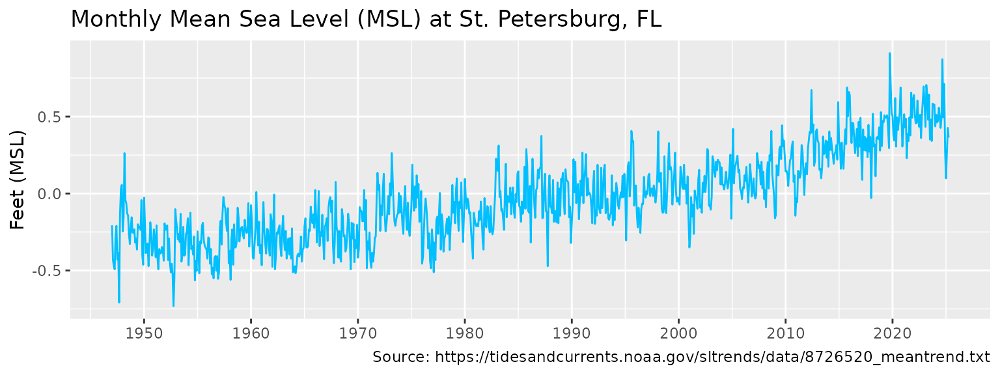
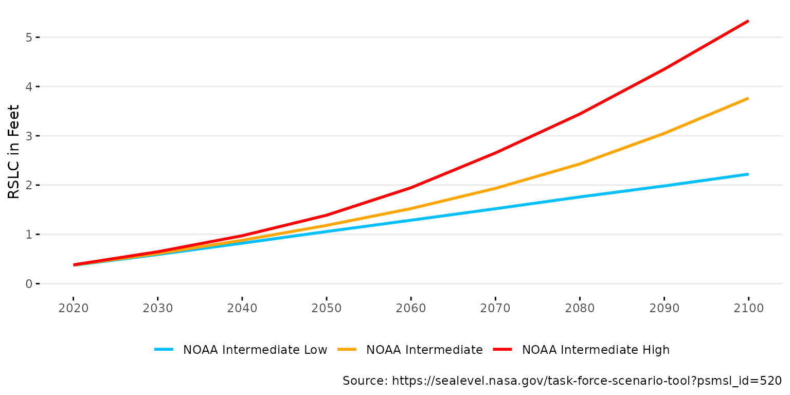
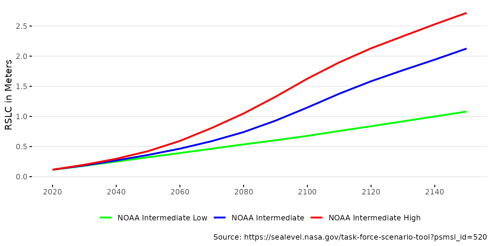
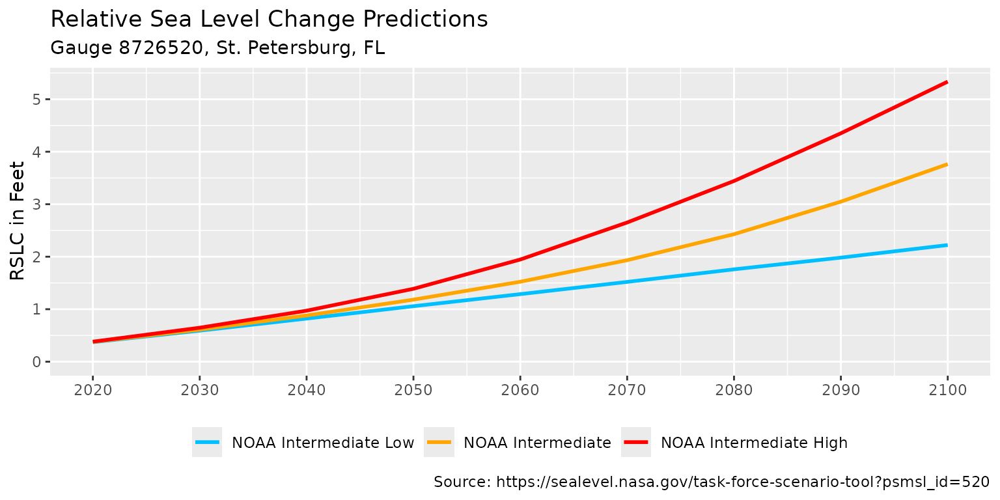

Installation
Install the package from r-universe as follows. The source code is available on GitHub.
# Install slrcsap in R:
install.packages('slrcsap', repos = c('https://tbep-tech.r-universe.dev', 'https://cloud.r-project.org'))Load the package in an R session after installation:
library(slrcsap)Usage
The package includes two core functions to download data and two core
functions to plot data. The two download functions are
get_sealevel() and get_scenario() to download
tidal gauge data and sea level rise scenario data, respectively. The
corresponding plot functions to view data retrieved from the download
functions are plot_sealevel() and
plot_scenario(). The content below demonstrates how to use
each function, including the optional arguments that can be used to
customize the output.
Sea level Data
Sea level data is downloaded from the NOAA Tides and Currents website. The data is available for all NOAA tide gauges and is setup to download data for the St. Petersburg, FL gauge (NOAA ID 8726520) by default. The data is read directly into R from the URL https://tidesandcurrents.noaa.gov/sltrends/data/8726520_meantrend.txt. The data includes monthly mean sea level (MSL) values from 1947 to the present, including a seasonal correction.
# Download sea level data for St. Petersburg
spsealevel <- get_sealevel()
head(spsealevel)
#> gauge Year Month msl_m date msl_ft
#> 1 8726520 1947 1 -0.063 1947-01-01 -0.2066929
#> 2 8726520 1947 2 -0.132 1947-02-01 -0.4330709
#> 3 8726520 1947 3 -0.142 1947-03-01 -0.4658793
#> 4 8726520 1947 4 -0.150 1947-04-01 -0.4921260
#> 5 8726520 1947 5 -0.086 1947-05-01 -0.2821522
#> 6 8726520 1947 6 -0.064 1947-06-01 -0.2099738Data for alternative stations can be obtained using the
gauge argument.
# Download sea level data for Cedar Key
cksealevel <- get_sealevel(gauge = 8727520)
head(cksealevel)
#> gauge Year Month msl_m date msl_ft
#> 1 8727520 1914 4 -0.170 1914-04-01 -0.5577428
#> 2 8727520 1914 5 -0.161 1914-05-01 -0.5282152
#> 3 8727520 1914 6 -0.142 1914-06-01 -0.4658793
#> 4 8727520 1914 7 -0.129 1914-07-01 -0.4232284
#> 5 8727520 1914 8 -0.098 1914-08-01 -0.3215223
#> 6 8727520 1914 9 -0.186 1914-09-01 -0.6102362The sea level data can be plotted using the
plot_sealevel() function.
# Plot sea level data for St. Petersburg
plot_sealevel(spsealevel)
# Plot sea level data for Cedar Key
plot_sealevel(cksealevel)
Various arguments for plot_sealevel() can change the
appearance of the plot. Below, the color, units, and x-axis range are
modified
# Change arguments for the plot
plot_sealevel(spsealevel, col = 'tomato1', units = 'm',
xrng = as.Date(c('2000-01-01', '2023-01-01')))
The plot is also a ggplot() object and can be modified
with additional ggplot2 functions. Below, the plot is modified to
add a title and change the theme.
# Add a title and change the theme
library(ggplot2)
plot_sealevel(spsealevel) +
ggtitle('Monthly Mean Sea Level (MSL) at St. Petersburg, FL') +
theme_grey()
Sea Level Rise Scenarios
Sea level rise scenarios can be downloaded using the
get_scenario() function. Data are downloaded from the Interagency Sea Level Rise Scenario Tool
website. Details of the methods used in this tool are found in the
technical report [@sweet2022]. The data
are downloaded as an Excel sheet to from the URL https://sealevel.nasa.gov/task-force-scenario-tool?psmsl_id=520,
set to St. Petersburg, FL by default using regionally corrected NOAA
2022 curves. Emissions scenarios of NOAA Intermediate Low, Intermediate,
and Intermediate High are downloaded by default, as recommended by the
Climate Science Advisory Panel. The data show relative sea level change
(RSLC) from 2020 to 2100 for each scenario in meters and feet.
# Download sea level rise scenarios for St. Petersburg
spscenario <- get_scenario()
head(spscenario)
#> # A tibble: 6 × 5
#> id scenario year slr_m slr_ft
#> <dbl> <fct> <dbl> <dbl> <dbl>
#> 1 520 NOAA Intermediate Low 2020 0.113 0.372
#> 2 520 NOAA Intermediate Low 2030 0.180 0.592
#> 3 520 NOAA Intermediate Low 2040 0.250 0.821
#> 4 520 NOAA Intermediate Low 2050 0.322 1.06
#> 5 520 NOAA Intermediate Low 2060 0.392 1.29
#> 6 520 NOAA Intermediate Low 2070 0.463 1.52Data for alternative locations and scenarios can be obtained using
the id and scenario arguments,
respectively.
# Download sea level rise scenarios for Cedar Key
ckscenario <- get_scenario(id = 428, scenario = c('Low', 'IntLow', 'Int', 'IntHigh', 'High'))
head(ckscenario)
#> # A tibble: 6 × 5
#> id scenario year slr_m slr_ft
#> <dbl> <fct> <dbl> <dbl> <dbl>
#> 1 428 NOAA Low 2020 0.101 0.332
#> 2 428 NOAA Low 2030 0.153 0.502
#> 3 428 NOAA Low 2040 0.207 0.679
#> 4 428 NOAA Low 2050 0.258 0.847
#> 5 428 NOAA Low 2060 0.301 0.988
#> 6 428 NOAA Low 2070 0.340 1.12The sea level rise scenarios can be plotted using the
plot_scenario() function.
# Plot sea level rise scenarios for St. Petersburg
plot_scenario(spscenario)
# Plot sea level rise scenarios for Cedar Key
plot_scenario(ckscenario)
Various arguments for plot_sealevel() can change the
appearance of the plot. Below, the color ramp, units, and x-axis range
are modified
# Change arguments for the plot
plot_scenario(spscenario, cols = c('green', 'blue', 'red'), units = 'm',
xrng = c(2020, 2150))
The plot is also a ggplot object and can be modified
with additional ggplot2 functions. Below, the plot is modified to
add a title, subtitle, and change the theme.
# Add a title, subtitle and change the theme
plot_scenario(spscenario) +
labs(
title = 'Relative Sea Level Change Predictions',
subtitle = 'Gauge 8726520, St. Petersburg, FL'
) +
theme_grey() +
theme(legend.position = 'bottom')